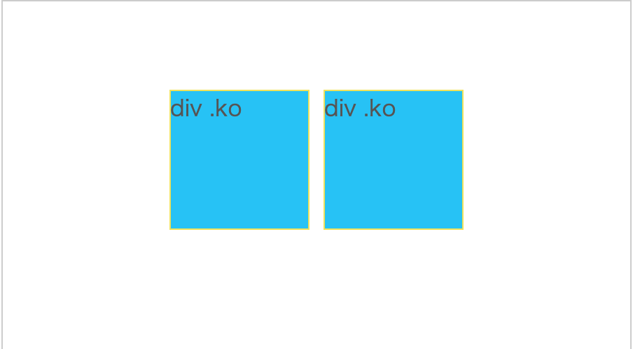

１ CSSで親要素（.parent）と子要素(.child)のmarginとpaddingを変更してみましょう。
２ HTMLで閉じタグの位置を変更して、親子関係を兄弟関係にしてみましょう。
１ CSSで親要素（.parent）と子要素(.child)のmarginとpaddingを変更してみましょう。
２ HTMLで閉じタグの位置を変更して、親子関係を兄弟関係にしてみましょう。
１ CSSでブロック要素（.block）とインライン要素（.inline）の
width, height, padding, margin を変更してみましょう。
２ CSSでdisplayプロパティを適用してみましょう。
３ HTMLで要素を増やしてみましょう。
発展 どこに何を適用したら上下左右の中央寄せが反映されるか試してみましょう。
１ 要素選択ツールで上から2番目の要素を選択する。
２ CSSでclass1,class2それぞれのプロパティを削除したり追加したりしてみましょう。
１ 親要素の文字色を変えてみましょう。
２ 打ち消されているプロパティを確認しましょう。
３ 自由にプロパティを適用して継承を試してみましょう。
発展 ●が点線の内側に入るようにしましょう。
Ｔips CSSの上書きについてはCSS 優先順位で検索！

１ それぞれの要素の大きさを変更してみましょう。
２ 下の要素の画像が1枚、中央に表示されるようにしましょう。
発展 使い分ける理由を考えてみましょう。
発展 下図のようなデザインにしましょう。
